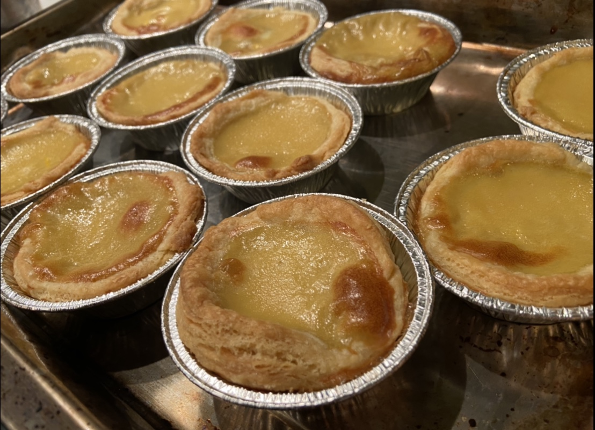
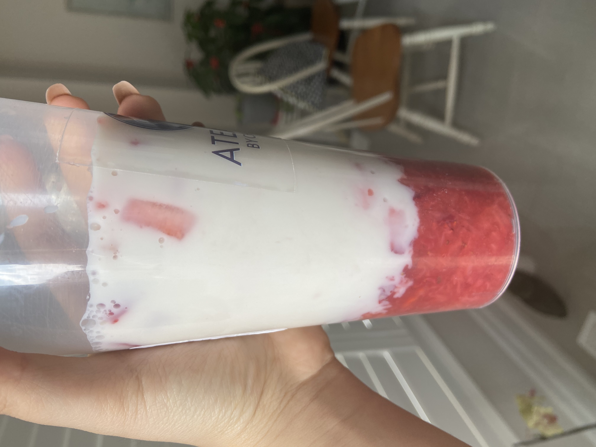
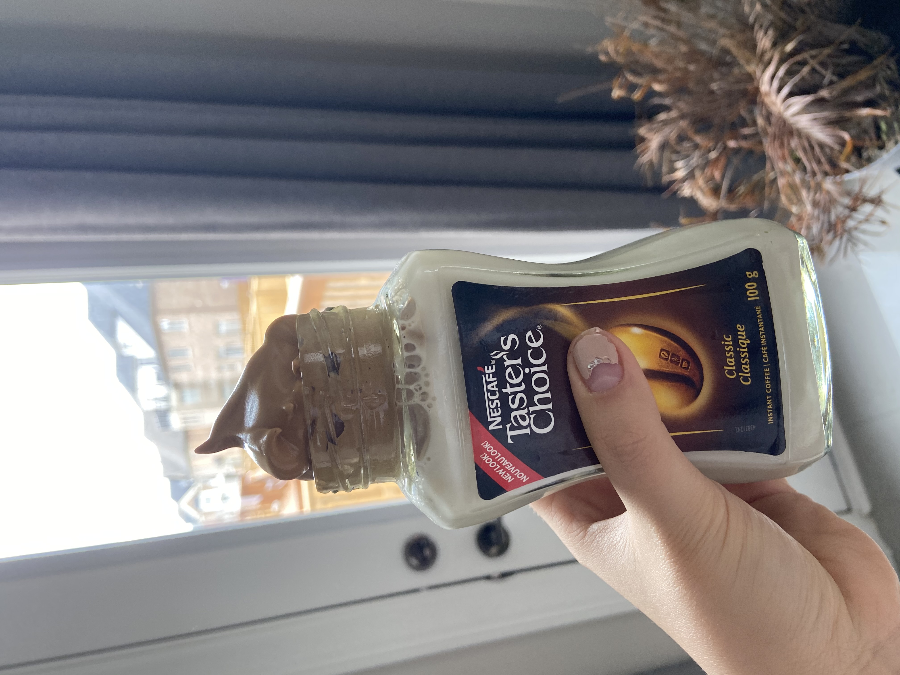
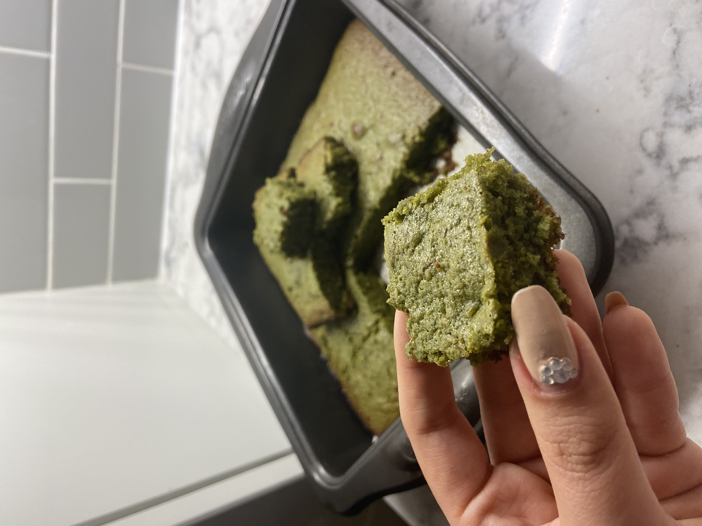
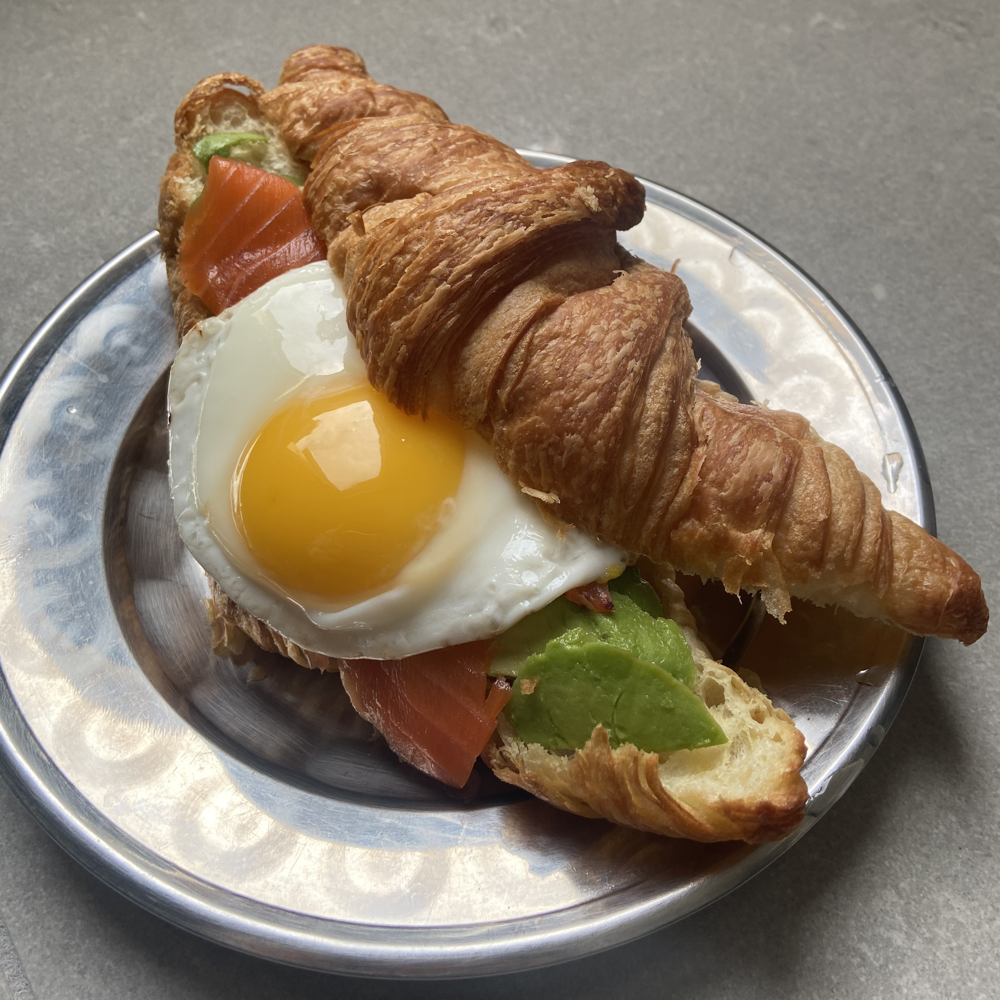
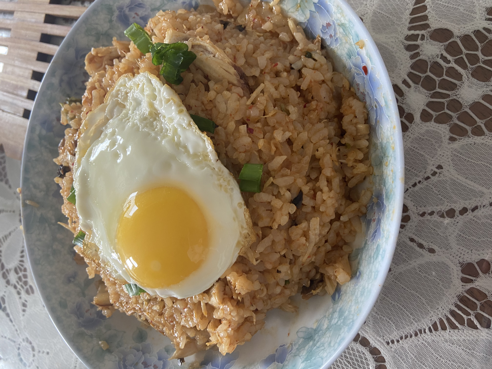
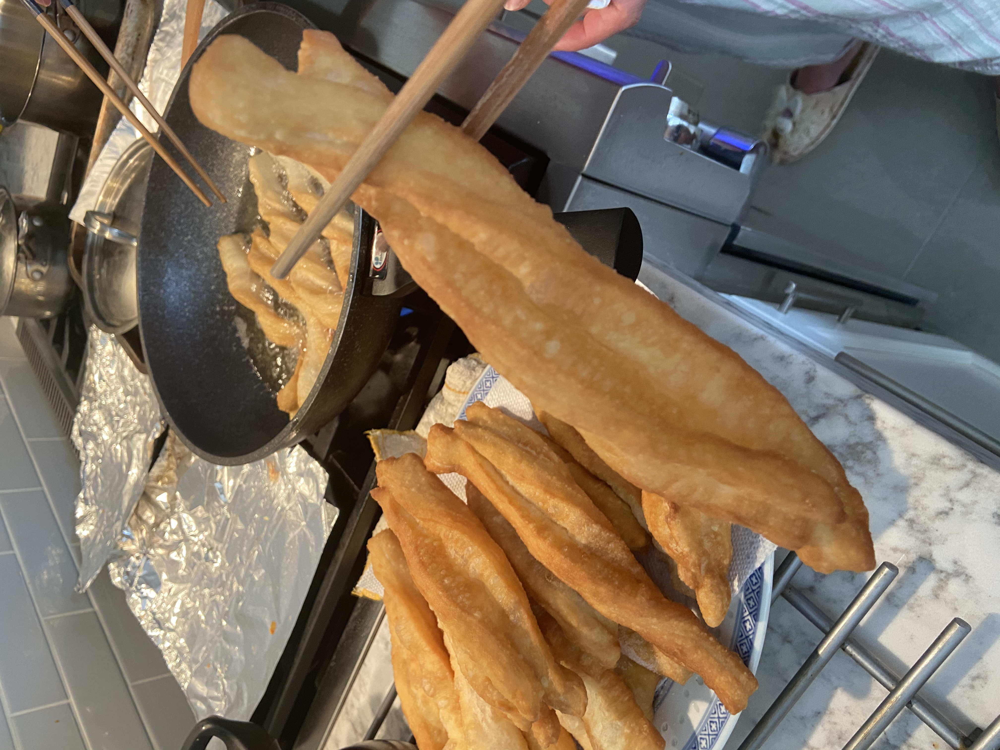
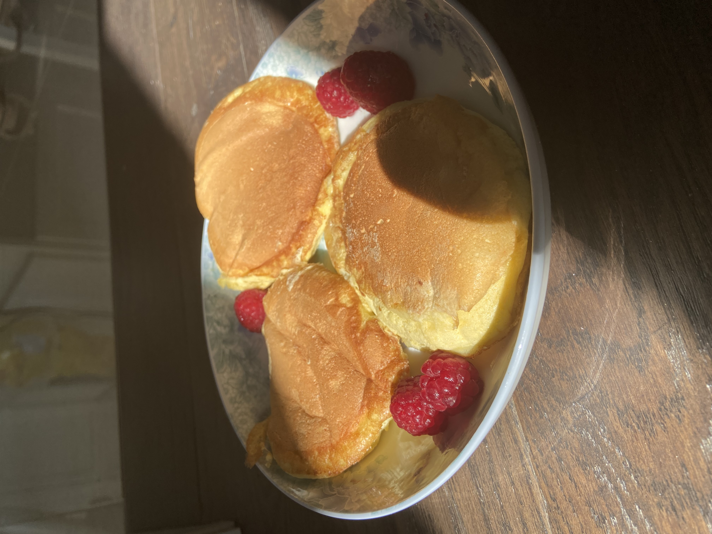
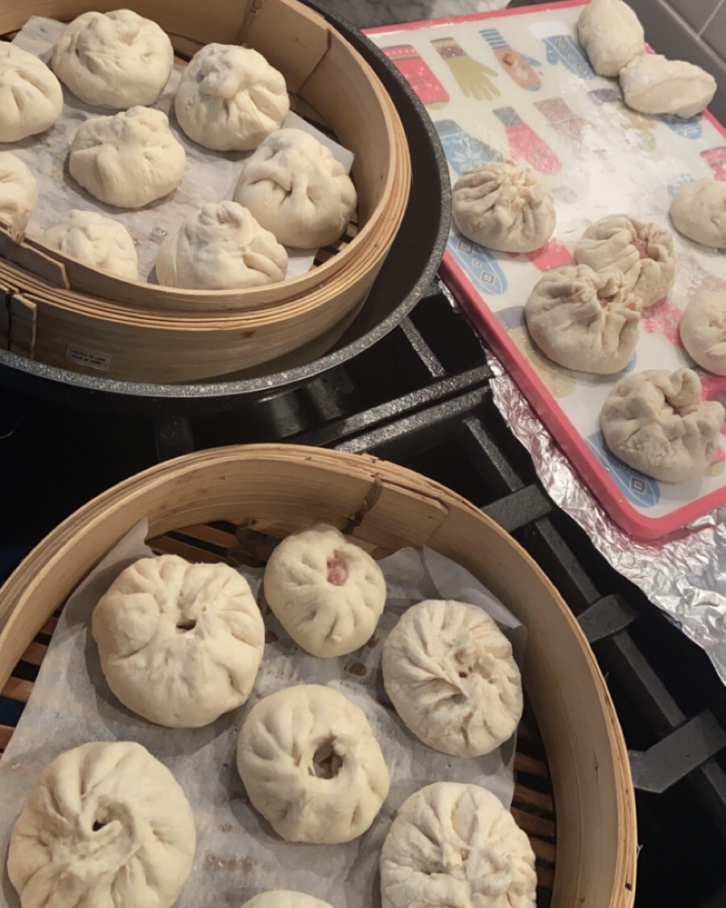
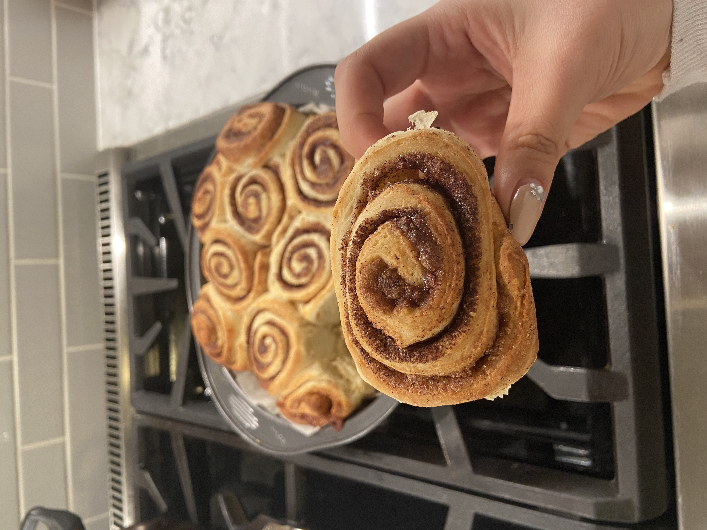

Top Quarantine
Baking Inspirations
Fierce pastries to get you through a boring day!
With quarantine lasting longer than expected, here were some tasty treats that helped me get through the day, week, or even month! I've always loved baking but never had the time to explore anything other than cupcakes or cookies so I thought I would rank the pastries I made from the easiest to the hardest, along with some tips I learned! Click on the photo for a link to the recipe and let me know if you try it out! :)
- Strawberry Milk
- Dalgona Whipped Coffee
- Matcha White Chocolate Brownies
- Avocado Toast
- Kimchi Fried Rice
- Chinese You Tiao
- Japanese Fluffy Pancakes
- Home Made Tapioca + Milk Tea
- Apple Pie Ingredients - Dough: Flour | Sugar | Salt | Butter | Sour Cream/Vanilla Yogurt Ingredients - Pie: Apples | Sugar | Flour | Cinnamon | All Spice | Nutmeg | Vanilla Extract
- Chinese Napa Buns
- Hokkaido Milky Bread Loaf Ingredients: Flour | Sugar | Yeast | Water | Milk | Salt | Eggs | Butter | Milk Powder
- Cinnamon Rolls
- Pineapple Bun/ Taro Rolls Ingredients: Flour | Sugar | Yeast | Water | Milk | Salt | Eggs | Butter | Milk Powder | Taro
- Puff Pastry Egg Tarts Ingredients: Flour | Sugar | Milk | Salt | Eggs | Butter | Vanilla Extract 
Ingredients: Strawberries | Choice of Milk | Sugar (Optional)  A super 2 ingredient drink that can be as little as 50 calories/cup! I like using almond milk to keep the drink low in calories but still yummy and try to avoid adding additional sugar. I tried the recipe that used 1/2 cup of sugar but it ended up tasting the same to me when I didn't add any sugar at all!
Ingredients: Instant Coffee | Choice of Milk | Sugar  Only the trendiest drink out there with 3 ingredients! Since I ran out of Nestle's Taster's Choice Instant Coffee, Dalgona hasn't been the same to me. You have to try it with Taster's Choice, it tastes better than Starbucks, no joke! Make sure to use a hand mixer to make the whipping process quick and be sure to mix the whipped coffee into the milk to get a thick consistency.
Ingredients: Matcha Powder | Eggs | Flour | Baking Powder | Brown Sugar | Butter | White Chocolate  Not sure about you but brownies were always one of the easiest things I could bake, there's not much you could do to mess this up. My friend showed me this recipe from a Subtle Asian Cooking post and I had to try it. The only thing with brownies is the baking time - if you overbake it you'll get a nice cakey texture, but if you underbake it, you'll get that nice fudgey texture. Try to aim for that lower side, it makes all the difference.
Ingredients: Choice of Bread | 1/2 Avocado | Smoked Salmon | Fried Egg  This was the only reason I could wake up early in residence. You really can learn by watching and that's exactly what I did while watching the Ontario Hall chefs go at it in the Interactive Bar. You can customize your toast to your liking by adding salmon, bacon or salmon and bacon! The only hard part about nailing this dish is getting that perfect sunny side up egg that leaks right into your toast… Delicious!
Ingredients: Kimchi | Steamed Rice | Choice of Protein | Rice Vinegar/Soy Sauce/Gochujang | Mushrooms | Green Onion | Sesame Seeds  Another classic quarantine recipe because it's so easy! It's as easy as throwing a couple of ingredients in a frying pan together with the heat on. I know the recipe calls for kimchi juice but there usually isn't a lot in a pack so I like to use rice vinegar, soy sauce and gochujang to spice up the flavour! You don't need gochujang but everything tastes more Korean with it.
Ingredients: Baking Powder | Salt | Oil | Egg | Water | Flour  A classic Asian snack showcased on Subtle Asian Cooking that caught my eye! Making the dough for this was super easy and doesn't require too much effort. The dough does need to be kept in the fridge overnight so plan ahead of time! The hardest part that was also the most fun was actually frying these lovelies. Videos often show how you have to press the pieces of dough together but omit the fact that they can come apart when frying. A secret trick my mom told me was to press the pieces down hard and twist the strand to prevent them from flaking apart.
Ingredients: Milk | Flour | Baking Powder | Egg Whites | Sugar | Vanilla Extract  These pancakes are really fun to make because of how fluffy the batter is and how much fun you can have when flipping the pancakes. They are no joke though, I really don't know how Fuwa Fuwa does it because they come out super airy and slowly deflate. Make sure to stack the pancakes high though to get a thick layer. If you want to have a little fun, try adding 1 teaspoons of matcha powder into the dry ingredients and top it off with fruit!
Ingredients - Tapioca: Brown Sugar | Tapioca Starch | Water
Ingredients - Milk Tea: Choice of Tea | Choice of Milk | Brown Sugar
 A successful bubble tea recipe I urge you to try, it tastes like Chatime and will save you so much money. Although I failed at keeping the ball like shape of my tapioca in both of my attempts, I've watched enough videos to know that you need to have a smooth, elastic dough consistency that will break when you stretch it still moist. Don't be fooled if your dough is super dry at first because as you knead it, the water mixture will start to come out to keep the dough together. In terms of milk tea, just brew jasmine green tea in a cup of water so that it's really strong, melt brown sugar in and pour milk over top. A simple green tea latte!
A successful bubble tea recipe I urge you to try, it tastes like Chatime and will save you so much money. Although I failed at keeping the ball like shape of my tapioca in both of my attempts, I've watched enough videos to know that you need to have a smooth, elastic dough consistency that will break when you stretch it still moist. Don't be fooled if your dough is super dry at first because as you knead it, the water mixture will start to come out to keep the dough together. In terms of milk tea, just brew jasmine green tea in a cup of water so that it's really strong, melt brown sugar in and pour milk over top. A simple green tea latte!
One of the very first things I repeatedly baked and eventually mastered the lattice pie top! The trick to a good pie crust is to use either Greek plain yogurt for a healthy taste or Vanilla yogurt for a sweet sensation, I've tried both and I really liked the vanilla. Peeling apples is a true speedbump but after my parents bought me an apple corer it made this process a lot faster. The lattice also isn't too hard, there are a lot of YouTube videos that show you the ropes, but just remember, under and over! Lastly, do not forget the egg wash. I recently learned that there are different types of egg wash that result in different looks depending on what you add. I personally like the golden look off a beaten egg yolk for pies.
Ingredients: Every possible spice in your mom's cabinet  Napa cabbage is one of my favourite Asian vegetables, hands down. My grandma always made me Chinese buns with different fillings and I thought I'd try it out for myself. It was super interesting experimenting with the different Asian spices that my sense of smell could pick up as the ingredients I ate growing up. My favourite part was seeing the need for osmosis to allow for the water in the leaves to leave after being coated with salt. This allows for the leaf cells to be in a hypertonic state to prevent the filling from being too wet (yay for interdisciplinary connections!).
The classic bread recipe that applies chemistry to ensure your bread is nice and fluffy. Yeast truly is a magical fungus in that it consumes sugar and releases carbon dioxide, when the carbon dioxide is trapped in the dough, the nice, airiness is created. I've made bread at least once a week this quarantine and I think I finally mastered it. A rookie mistake I made was killing the yeast while trying to activate it, be sure to have warm milk/water. If the milk is too hot to dip your finger in, it's too hot for the yeast. Another thing that makes the bread softer is actually dry milk powder, of course this isn't a common ingredient but it really does make the difference. Apparently the milk fat acts as a tenderizer and interferes with gluten production. Anyways, once you've learned how to make bread dough, you can make any kind of bread you want! There are lots of tutorials on YouTube that range from milk bread trays, braided buns and twists, adventure 'til your heart's content!
Ingredients: Flour | Sugar | Yeast | Water | Milk | Salt | Eggs | Butter | Cinnamon  Another recipe that makes use of my favourite ingredient, yeast! There are other recipes that omit the use of yeast if it's not available to you, but I highly encourage you to make a trip to get it because it's magic. These rolls weren't too hard to make but don't be afraid to get your hands buttery and have some fun with it! Feel free to eat the rolls plain or top it off with icing, I would recommend looking up cream cheese icing, sounds just like Cinnabon!
These bread variations use the same recipe as the Hokkaido Milky Bread Loaf! You can get creative by experimenting with your favourite sweets/foods and combining them together. My family really likes taro bread from T&T so I thought I'd give it a try, click the link and look for the recipe for the filling. One thing about baking is that it's not fixed so feel free to combine a couple of recipes if you like to stick to the things you've mastered already! The only difference between these buns are just the toppings so I often like to make a big batch of dough and fill my house with the aroma of an Asian bakery.
Finally, the hardest in the books, in my opinion. It's super easy to get lazy and just go out to buy egg tart shells, but it's just not the same! Follow exactly as the video does you'll end with nice results, one thing to keep in mind is to always have your dough cold, this has something to do with butter temperature and pastry flakiness. Another thing is to try to roll out your dough as big as possible in your first try because I found that once I balled up the uncut dough, the end result was not the same!! I also somehow added 2 tablespoons of vanilla extract instead of 2 teaspoons… Please don't make that mistake. Although this recipe is tedious and will get your hands dirty, it's definitely worth a try!